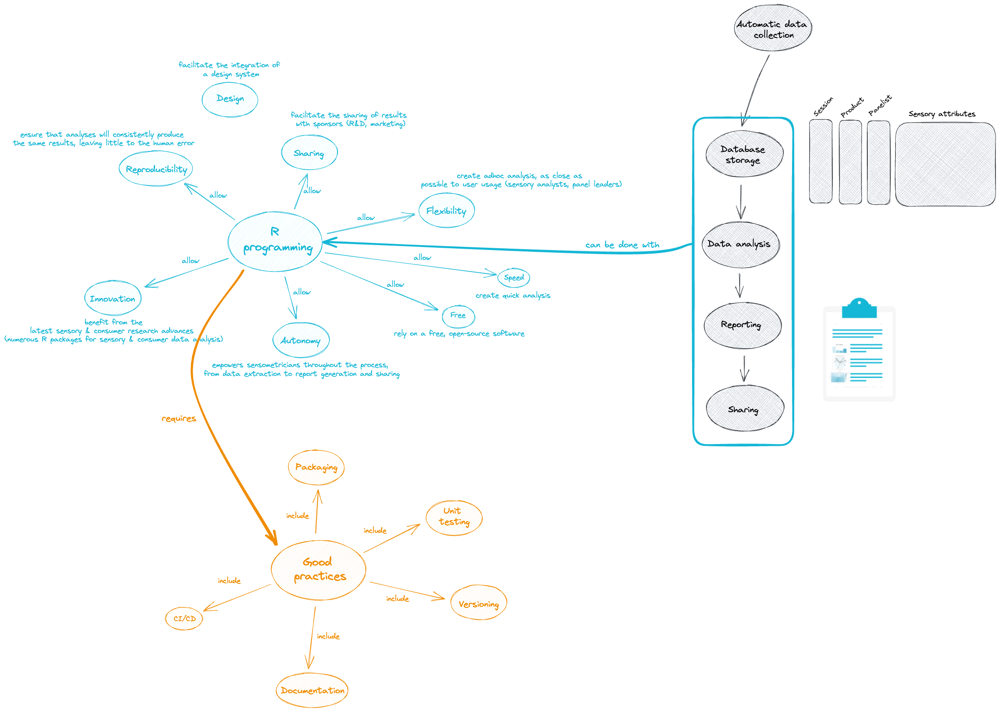

{sensoreport} is a demo Shiny application dedicated to the creation of automated, reproducible, interactive and ready-to-share sensory/consumer reports.
Such tool can enable sensory analysts and panel leaders to spend less time preparing reports, and add more value to their work.
When software development meets sensory sciences to create and share ad-hoc reproducible sensory reports: Opportunities & challenges

Highlights
- Robust tool thanks to unit tests
- Versioned tool
- Documented tool
- Continuously deployed tool (each modification to the code automatically triggers deployment of the app in production)
- Automated and industrialized workflow
- Seamless workflow for the users (sensory analysts and panel leaders)
User guide
- Specify your name
- Choose a toy session
- Select the products you want to include in the report
- Run the report
- Visualize the report and download it if you want
Development
- fusen to create, document and test business functions (sensory mapping, preference mapping, etc.): https://github.com/ThinkR-open/fusen
- golem to create the Shiny app into a R package: https://github.com/ThinkR-open/golem